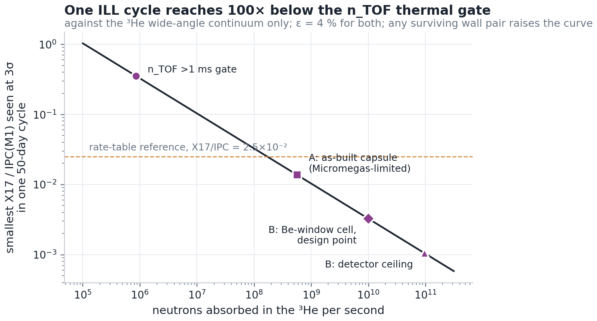
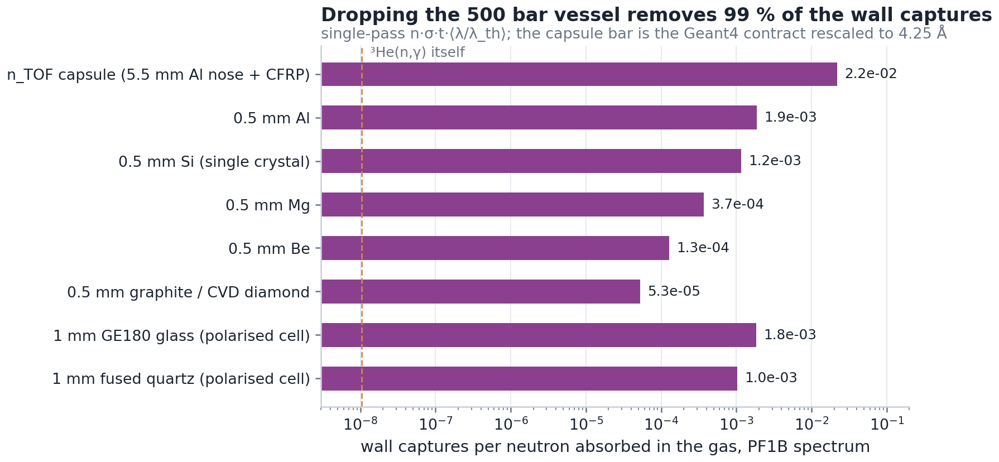
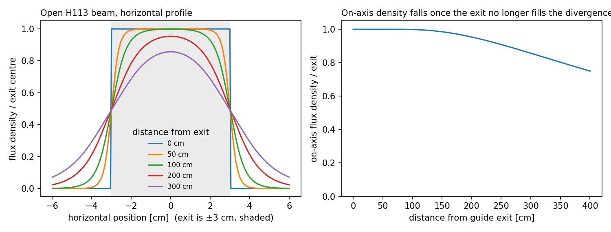

ILL, Grenoble: the thermal X17 search on a reactor beam
Institut Laue-Langevin · PF1B (H113 cold guide), FIPPS · ³He(n,e⁺e⁻)⁴He at rest · October 2026
A continuous cold-neutron beam absorbed in a 1 bar ³He cell: no flash, no time of flight, ~10¹⁰ absorbed neutrons a second. A full Geant4 campaign on lxplus mapped six cell designs, the backgrounds and the reach.
The feasibility deckverdict The slide summary: scattering, rates, backgrounds, the segment cuts, what limits the reach, and how it compares to ATOMKI.Verdict (7 October 2026). With the n_TOF hardware, Micromegas segments (≤ 3°), a 20° collinearity veto in place of a ceiling panel and a CFRP end cap, one unpolarised 50-day cycle reaches X17/IPC(M1) ≈ 1.2×10⁻² at 3σ. That is ×7.5 above ⁸Be's level (1.6×10⁻³); even zero background leaves ×3–4. One unpolarised cycle cannot reach ⁸Be's level. What could close it: more cycles, ×4 energy containment, a polarised ³He target at PF1B (E0 suppression), or a thermal M1 that turns out favourable.
- 1.2×10⁻²3σ reach, 50 dX17/IPC(M1), n_TOF hardware
- ~10¹⁰absorbed n/sØ2 cm spot; plenty more beam
- ~700X17 detected / cycleat the 2.5×10⁻² reference
- G1cell1 bar, 12 µm skin, R = 40 mm

What limits it
- Cosmics first: the chord estimator turns any straight line through two arms into a ~120° "pair". MM segments and a collinearity veto take them from ~9×10⁵ to ~10⁴ per cycle.
- Accidentals next: pile-up of two singles, from captures in the Be window and the air. A He flight tube and a 25 µm mylar window are the levers being simulated.
- Three rate walls: accidentals ∝ R²·2τ, Micromegas occupancy from stray-neutron captures in the detector, and DREAM dead time (298 µs a trigger).
- Lepton scattering is not the limit: the X17 leptons carry ≳ 3.5 MeV, and an ideal vertex gains only ~13 %.

The beams
PF1B: 6 × 20 cm², 2×10¹⁰ n/cm²/s capture flux, mean λ 4–4.5 Å; polarised 6 × 8 cm² at 99.7 %. FIPPS: a halo-free Ø1.5 cm thermal pencil that fits the as-built capsule's bore.
- 3D: the ILL beams, to scale PF1B unpolarised and polarised, FIPPS, with our capsule, a Be-window cell, ILL polarised cells and the magic box.

Hardware studies that came out of it
- Trigger scintillatorsThe as-built stack accepts 2.3 % of X17 pairs. Four ~70–80 cm plastics give ~14 % (×6) for ~€80k; 4–5 cm thick ones also do calorimetry (×7.7 on the ILL E_sum analysis) for ~€90–140k. The SiPM wall, not the Micromegas, sets the cap.
- ⁴He bag and the ³He-tight skinBare mylar loses ~22 L of ³He a cycle; 12 µm PET + 6–7 µm Al stops it without adding background.
Source: x17_facility_search/ill/
(FEASIBILITY_SIM.md §1–12), trigger_scint/, he4_bag/;
Geant4 on MX17_Full_Geant branches ill / ill_ring.